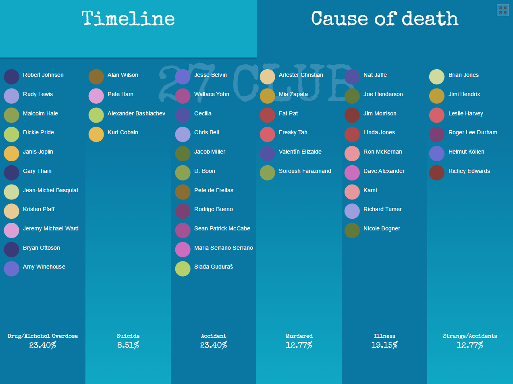
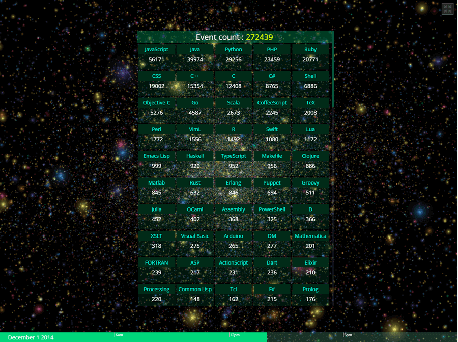
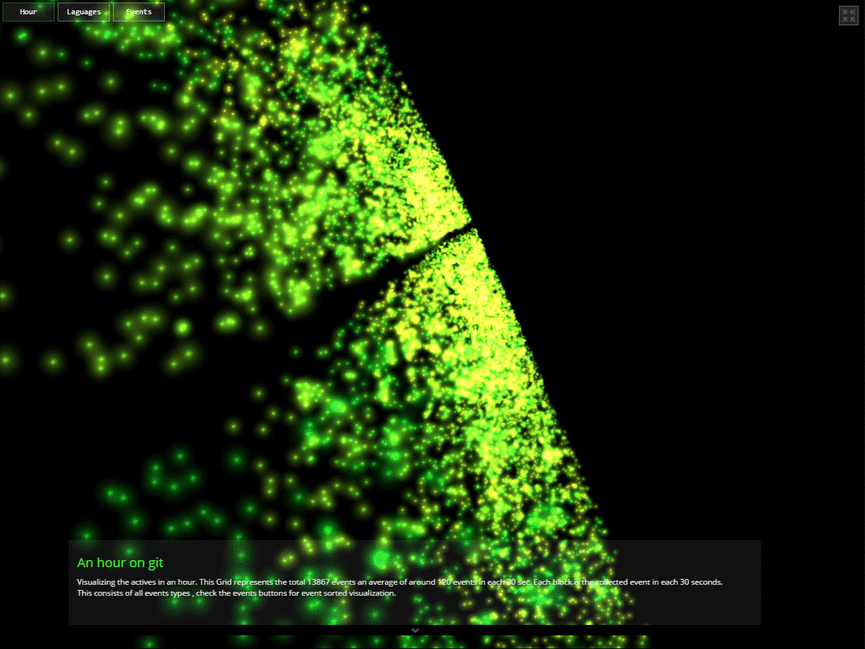
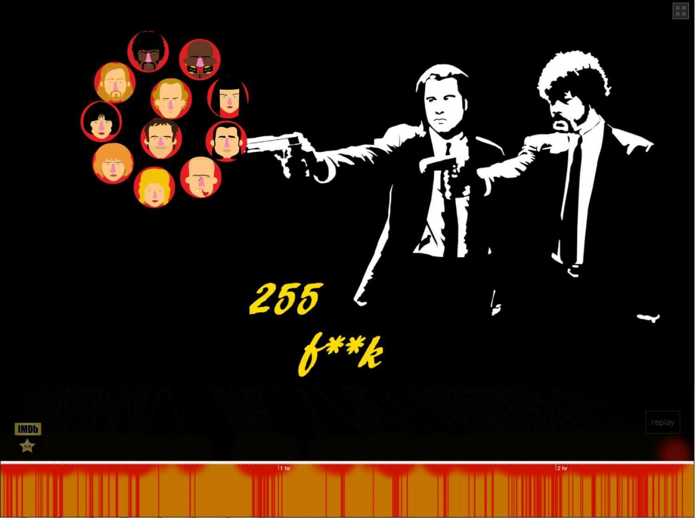
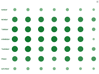
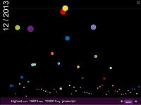
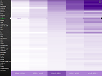

Some data visualizations and infographics
Here you can find a collection of info graphics and data visualization on various topic. Those are created with awesome JavaScript libraries like D3js, Threejs, Tweenjs. All are experiments of different visualization techniques. Most of these data can be visualized with a bar or pie chart, but here I am choosing different types of data presentation just for the sake of it. WebGL is used for some of the visualizations, I recommend to view these experiments on any modern browsers.
-

3D Periodic table of elements
A 3d visualization of periodic table. This 3d representation has a table view which shows initially and an atomic view. Click on each element to explore atomic view. -

27 Club Visualization
Visualization of 27 Club members, artists name mapped on timeline and cause of death -

A Day on GitHub
A day on github, visualization of events logged in a day on github. -

An hour on GitHub
An hour on github, visualization of events logged in one hour on 12 August 2014 on github. -

255 f**k in Pulp Fiction
The word 'fuck' is used 255 times in the filim Pulp Fiction , checkout the visualization to see when they are -

Did you code on last Christmas day ?
It’s the punch-card visualization of question asked in each day of November-December in 2013 -

How tags are growing ?
This graph shows the growth of tags in each month.The vertical position of circle represent the count of questions in a month. -

Which is the trending tag last year?
You can sort the data in yearly wise by clicking on the bottom year tab. The tags will be rearranged in descending order -

Relation between tags in stackoverflow
This graph shows the relation between first 60 tags and each tags first 60 related tags.